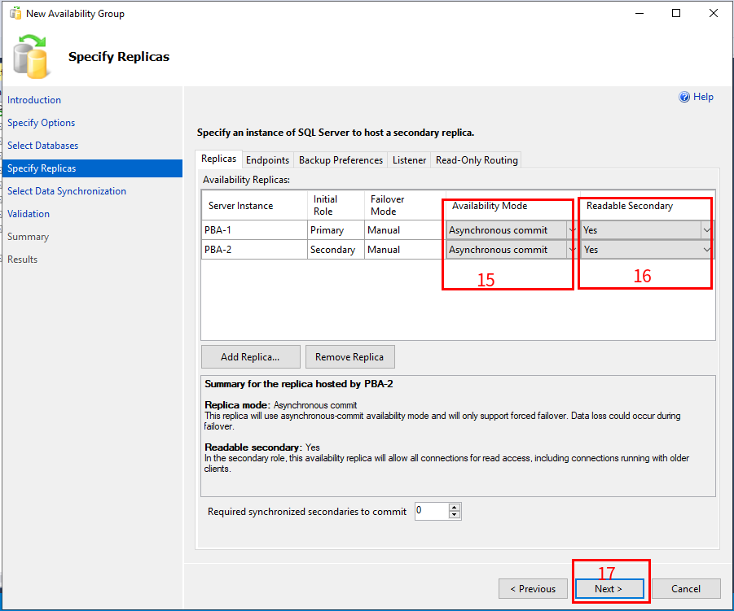

# 操作系统
# 软件依赖
- SQL Server
- SSMS
# 实验环境
- PBA-1 Server：4x core, 8GB RAM, 50GB HDD, Win2017 server OS
- PBA-2 Server：4x core, 8GB RAM, 50GB HDD, Win2017 server OS
# 什么是数据灾备
数据灾备全称为数据灾难备份，是指为防止出现操作失误或系统故障导致数据丢失，而将全系统或部分数据集合，从应用主机的硬盘或阵列复制到其他存储介质的过程。
# 实验目标
- 两台服务器分别安装 SQL Server 并且建立无域群集高可用来实现主从热备。
- 两台服务器之间建立 Windows 故障转移群集实现高可用，当其中一台服务宕机后，备份服务器自动切换为主服务器提供服务
# 实验步骤
- 配置 Host Name
- 安装 SQL Server
- 创建 SQL Server 实例
- 配置 SQL Server 与防火墙
- 安装 SSMS
- 创建备份与清理计划
- 创建故障转移群集
- 创建无域群集高可用组
# 配置 Host Name
服务器配置
Server Host Name domain SQL Server 端口 PBA-1 PBA-1 test.com 14331 PBA-1 PBA-1 test.com 14331 右击我的电脑，点击属性
输入主机名与域名
重启电脑可以看见主机名变化
修改 C:\Windows\System32\drivers\etc\hosts 文件，添加 ip，服务器名，域名
101.241.50.134 PBA-1 test.com 101.241.50.138 PBA-2 test.comCtrl+R，输入 cmd 回车。两台服务器用 ping 命令测试服务器名，例如


# SQL Server
SQL Server 是 Microsoft 公司推出的关系型数据库管理系统。具有使用方便可伸缩性好与相关软件集成程度高等优点，可跨越从运行 Microsoft Windows 98 的膝上型电脑到运行 Microsoft Windows 2012 的大型多处理器的服务器等多种平台使用。
# 安装
两台服务器都需要安装
- 打开 SQL Server 安装器
- 选择安装
- 选择新建一个示例
- 输入激活码，这里使用试用版
- 选择接受

- 选择自动更新
- 下一步
- 安装下列插件，指定安装目录，点击下一步
- SQL Server Replication
-Client Tools Connectivity
-Client Tools SDK
-SQL Client Connectivity SDK - 输入实列名 (数据库名)
- 选择自动启动服务
- 添加目前用户，下一步
- 给 SQL Server 授予文件系统权限

- 点击安装
- 等待安装完成后，点击开始，打开 SQL Server 配置器
- 检测是否存在新创建的示例


# 网络配置
两台服务器都需要配置
- 打开 SQL Server 配置器
- 点击 SQL Server Services，双击需要修改的实列
- 选择 Local System，点击 apply
- 点击 yes
- 点击 SQL Server Network Configuration
- 双击一个我们需要修改的示例，双击 Named Pipes
- 设置 Enable 为 Yes
- 点击 IP Address，配置实例端口，点击 apply
- 点击 OK
- 现在 SQL Server 能建立 TCP/IP 连接了
- 重启实例
# 防火墙配置
配置防火墙规则如下
Fire Rule Name Port Host Name Protocol Profile Remarks sql-instance 14331 PBA-1 TCP Domain,Private Primary Server SQL Server 实例端口 sql-instance 14331 PBA-2 TCP Domain,Private DR Server SQL Server 实例端口 sql-endpoint 5022 PBA-1 TCP Domain,Private Primary Server SQL Server 高可用组通信端口 sql-endpoint 5022 PBA-2 TCP Domain,Private DR Server SQL Server 高可用组通信端口 sqlserver-browser 1434 PBA-1 UDP Domain,Private Primary Server SQL Server browser 通信端口 sqlserver-browser 1434 PBA-2 UDP Domain,Private DR Server SQL Server browser 通信端口 打开 windows 设置
选择 Update & Security
Windows Security > Firewall & network protection
点击 Advanced settings
创建防火墙规则
选择 port
输入要开启的端口
选择 Allow the connection option
选择 Domain 选项和 Private 选项
输入防火墙规则名和描述
检测防火墙规则是否打开
重复上面步骤创建所有防火墙规则
# SSMS
SQL Server Management Studio (SSMS) 是用于管理任何 SQL 基础结构的集成环境。 使用 SSMS，可以访问、配置、管理和开发 SQL Server、Azure SQL 数据库和 SQL 数据仓库的所有组件。 SSMS 在一个综合实用工具中汇集了大量图形工具和丰富的脚本编辑器，为各种技能水平的开发者和数据库管理员提供对 SQL Server 的访问权限。
# 安装
- 打开 SSMS 安装器
- 点击安装
- 安装成功
# 创建数据仓库
- 打开 SSMS
- 连接到数据仓库实例
- 新建数据库
- 输入数据库名，点击创建
# 手动备份
- 选择目标数据库，右键选择 tasks，选择 Back up
- 选择备份类型，点击 OK
# 自动备份任务
- 连接数据库后选择 Maintenance Plan Wizard
- 下一步
- 输入计划名和描述，点击 change，选择备份时间和频率，下一步

- 选择 back up Database
- next
- 选择需要备份的数据库
- 选择备份文件保存的目录
- 下一步
- 选择备份日志的文件目录

- 完成
- 备份成功
- 检查是否已经创建备份任务


# 自动清理任务
- 连接数据库后，点击 Management -> Maintenance Plans-> Manintenance Plan Wizard

- next

- 输入计划名和描述，点击 change，选择清理时间和频率，下一步
- 选择 Maintenance Cleanup Task
- next

- 在 13 编号那里输入清理目录，14 指删除超过多少天的文件
- 选择存放清理任务 log 日志文件夹
- 完成
- 创建成功


# 故障转移群集
# 无域故障转移群集
故障转移群集是一组独立的计算机，这些计算机相互协作以提高群集角色（之前称为应用程序和服务）的可用性和可伸缩性。 多台群集服务器（称为节点）通过物理电缆和软件连接。 如果一个或多个群集节点出现故障，其他节点就会开始提供服务（该过程称为故障转移）。 此外，群集角色会得到主动监视以验证它们是否正常工作。 如果不工作，则会重新启动这些角色或将其移动到其他节
# 启用功能
在所有需要加入群集的服务器都需要执行本节内容
# 创建群集
创建群集在任意一台进行一次就好，后续还可以加入其他服务器
- 开始 --> Windows Administrative Tools --> Failover Cluster Manager
- 下一步
- 填写需要加入群集的服务器 Host name；如果一次加入多台用逗号分隔，加入群集的服务器用户密码要一致否则会报错没有管理员权限
- 运行测试，第一次创建群集会出现这个对话框，如果选的 no，则直接跳到步骤 9

- 填写群集名称
- 检查是否创建成功

# 设置群集 IP
- 点击创建好的群集，设置属性
- 填写预先规划的群集 IP: 10.34.50.13
- 手工将群集上线，上线后，ping 群集 IP，ping 通了即可


# 连接已存在的群集
- 开始 --> Windows Administrative Tools --> Failover Cluster Manager
- 填写群集名称（群集 IP 对应的名称，如果本机是群集中的节点则不必填写）
# 手工迁移群集 IP
切换主节点
- 开始 --> Windows Administrative Tools --> Failover Cluster Manager > 已存在群集 > more action > move core cluster resource > select node
- 选择需要迁移的 ip
# 域故障转移群集
步骤类同无域故障转移群集，不同处是：不要求加入群集的服务器存在密码一致的系统用户，要求加入群集的服务器事先已经加入了域，且需要用域账户登录操作需要加入群集的服务器。
# AlwaysOn 可用性组
该功能主要用来进行数据库跨服务器的主备数据同步，注意：
- 启用该功能需要重启 SQL-SERVER 服务
- 创建可用性组一般在主库所在服务器上进行，管理可以在所有加入同一个可用性组的 SQL-SERVER 服务器上做，可以后续在可用性组中增加 SQL-SERVER 备机
- 一台 SQL-SERVER 服务器可以同时存在多个可用性组，一个可用性组也可以管理多个数据库
- 作为备库的 SQL-SERVER 服务器在加入可用性组之前不能存在与主库同名的数据库
- 一个数据库最多只能加入一个可用性组，但是一个主库可以有多个备库
- 需要启用可用性组的主库必须在创建可用性组之前进行了备份操作
- 在加入可用性组之前，各主备服务器之间必须已创建了加密连接端点
- 需要企业版才能支持备库可读
# 启用功能
该步骤需要在所有相关 SQL-SERVER 服务器上执行。
- 开始 --> Microsoft SQL Server 2017 -->SQL Server 2017 Configuration Manager
- 重启 SQL Server 服务
# 创建加密连接端点
该步骤用来主备服务器通讯加密，需要分别在主备服务器上执行
各服务器上创建目录：C:\sqlshare，并设置权限 Everyone 完全控制
开始 --> Microsoft SQL Server Tools 17 -->Microsoft SQL Server Management Studio 17
新建查询，按下面要求填写 sql 语句并执行
创建用于通讯验证的非对称密钥对
- 在主库节点执行：
-- 共享文件夹路径： ---\\PBA-1\sqlshare-- Create a database master keyCREATE MASTER KEY ENCRYPTION BY PASSWORD = 'cloud.Zijin'
GO
-- Create a new certificateCREATE CERTIFICATE PBA1WITH SUBJECT = 'PBA1_pri' , START_DATE = '2019-01-01', EXPIRY_DATE = '2099-12-31'
GO
-- Backup the public key of the certificate to the filesystemBACKUP CERTIFICATE PBA1TO FILE = 'C:\sqlshare\PBA1.cert'
GO
-- Create an endpoint for the Availability GroupCREATE ENDPOINT SQLAG_Endpoint STATE = STARTED
AS TCP(LISTENER_PORT = 5022)
FOR DATABASE_MIRRORING(AUTHENTICATION = CERTIFICATE PBA1,
ROLE = ALL,
ENCRYPTION = REQUIRED ALGORITHM AES
)GO
- 在备库节点执行：
-- Create a database master keyCREATE MASTER KEY ENCRYPTION BY PASSWORD = 'cloud.Zijin'
GO
-- Create a new certificateCREATE CERTIFICATE PBA2WITH SUBJECT = 'PBA2_pri', START_DATE = '2019-01-01', EXPIRY_DATE = '2099-12-31'
GO
-- Backup the public key of the certificate to the filesystemBACKUP CERTIFICATE PBA2TO FILE = 'C:\sqlshare\PBA2.cert'
GO
-- Create an endpoint for the Availability GroupCREATE ENDPOINT SQLAG_Endpoint STATE = STARTED
AS TCP(LISTENER_PORT = 5022)
FOR DATABASE_MIRRORING(AUTHENTICATION = CERTIFICATE PBA2,
ROLE = ALL,
ENCRYPTION = REQUIRED ALGORITHM AES
)GO
交换主备节点公钥
将上面目录 C:\sqlshare 里生成的公钥通过共享目录等方式，手工复制交换，确保主库节点目录 C:\sqlshare 存在备库节点的公钥，备库节点目录 C:\sqlshare 存在主库节点的公钥创建主备登录验证
在主库节点执行：
-- Create login for the other nodeCREATE LOGIN PBA2Login WITH PASSWORD = 'cloud.Zijin'
GO
-- Create user for the loginCREATE USER PBA2User FOR LOGIN PBA2Login
GO
-- Import the public key portion of the certificate from the other nodeCREATE CERTIFICATE PBA2_pub AUTHORIZATION PBA2User
FROM FILE = 'C:\sqlshare\PBA2.cert'
GO
-- Grant the CONNECT permission to the loginGRANT CONNECT ON ENDPOINT::SQLAG_Endpoint TO PBA2Login
GO
在备库节点上执行：
-- Create login for the other nodeCREATE LOGIN PBA1Login WITH PASSWORD = 'cloud.Zijin'
GO
-- Create user for the loginCREATE USER PBA1User FOR LOGIN PBA1Login
GO
-- Import the public key portion of the certificate from the other nodeCREATE CERTIFICATE PBA1_pub AUTHORIZATION PBA1User
FROM FILE = 'C:\sqlshare\PBA1.cert'
GO
-- Grant the CONNECT permission to the loginGRANT CONNECT ON ENDPOINT::SQLAG_Endpoint TO PBA1Login
GO
# AlwaysOn 无域无群集可用性组
该功能只能手工切换 SQL-SERVER 主备
打开 MSSM，开始 --> Microsoft SQL Server Tools 17 -->Microsoft SQL Server Management Studio 17
# 创建可用性组
一般在主库节点进行
- 填写可用组名称，选定群集类型为 “NONE”
- 选定需要加入当前可用性组的数据库
- 填写备库节点主机名
- 择同步方式：异步提交，选择副本是否可读：Yes

# 查看可用性组
主库状态：
备库状态：
# 主备切换
切换可在任意一个加入同一可用性组的节点进行
选择要切换为主库的备库节点
确认数据丢失风险，由于当前备库节点用的异步提交方式，所以会提示有数据丢失风险，如果是同步方式则无此选项
- 步骤 14 > 原主库手工切换为备库后的状态：未同步
- 步骤 16 > 手工启用数据同步
刷新数据库状态后可以看到备库同步了
# 删除可用性组
需要在所有相关节点执行
- 确认删除可用性组，会报错但实际已删除，刷新数据库连接可看到可用性组已删除，报错原因是没用故障转移群集却操作删除故障群集相关设置
# AlwaysOn 无域故障转移群集可用性组
使用了故障转移群集后可以实现 SQL-SERVER 主备节点自动故障切换，采用自动故障切换时可用性模式只能选同步提交的方式，这个功能要求先创建故障转移群集，后 SQL-SERVER 启用 AlwaysOn 特性（如果已启用需要在所有相关节点上关闭 AlwaysOn 后重启 SQL-SERVER 服务之后再次启用），最后创建 AlwaysOn 可用性组。
# 创建可用性组
具体创建步骤参考 AlwaysOn 无域无群集可用性组，不同之处如下
- 步骤 4 > 填写可用组名称：auto （自定义）
- 步骤 5 > 选择群集类型为 “Windows Server Failover Cluser” ，选了这个最后会在故障转移群集中自动创建一个同步骤 4 填写的可用组名称的角色
步骤 15 > 勾选 “Automatic Failover”，勾选这个后 SQL-SERVER 会自动进行主备故障切换，且可用性模式自动改为同步提交模式
# 群集管理器中查看可用性组角色
auto 这个角色是由上面小节操作 SQL AlwaysOn 可用性组创建向导创建的
# AlwaysOn 域故障转移群集可用性组
本功能要求系统预先加入域，其他操作同上
# 测试
- 初始状态
数据库 testdb 的 主库节点是 PBA-1，备库节点是 PBA-2
在主库节点看到的状态： - 杀死主库节点 SQL-SERVER 进程
打开 PBA-1 的资源管理器，找到 SQL-SERVER 进程然后杀死 - 查看数据库及可用性组状态
打开 PBA-2 的 SQL-SERVER Managerment Tools，查看数据库及可用性组状态。可以看到 PBA-2 自动切换成了主库节点 - 故障恢复
开始 --> Microsoft SQL Server 2017 -->SQL Server 2017 Configuration Manager
打开故障转移群集管理器：开始 --> Windows Administrative Tools --> Failover Cluster Manager
打开 PBA-1 的 SQL-SERVER Managerment Tools，查看数据库及可用性组状态
可以看到 PBA-1 又变成主库节点了